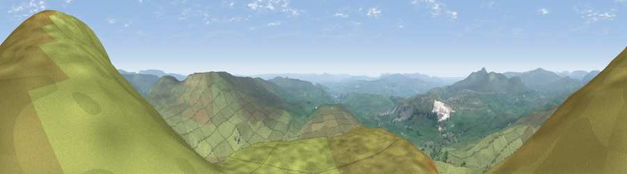

Viewpoint near Horton in Ribblesdale
#3003 in England · top 3% of its area beats it · near Horton in Ribblesdale · open accessWhere it is
The exact computed spot (SD 83675 73212). Click the marker for map links.
Public access: this spot lies on mapped open-access land (CRoW Act 2000) — you may roam here on foot. Computed from Natural England's CRoW access layer and OpenStreetMap rights of way — not the legal definitive map. Always verify locally.
The view, rendered

A 360° render of this exact spot computed from the terrain model, tree cover and land cover — summer colours, afternoon light, calibrated against photographs of famous viewpoints. Real trees, hedges and buildings will differ in detail.
The panorama
Grey silhouette: terrain skyline in each direction (720 bearings, Earth curvature and refraction included). Dashed green: skyline with trees (+15 m) and buildings (+8 m) as obstacles. Blue strip: how far the ground is visible on each bearing.
Where the view opens
Wedge length = distance to the farthest visible ground on that bearing (vegetation-aware). Rings at 10, 25 and 50 km.
What fills the view
97% grassland · 2% woodland ·
Angular shares of the visible panorama (visual magnitude), not map area. Landscape diversity 0.06 (0–1 Shannon).
Key numbers
More beautiful places nearby
The staircase of upgrades: each row has a higher view potential than everything closer. Driving times are estimates from straight-line distance, calibrated against real road routing — check an actual route before setting out.
| Place | Direction | Drive | Score |
|---|---|---|---|
| Pen-y-ghent | NE · 0 km | ~1 min | 75.8 |
| Little Ingleborough | W · 9 km | ~18 min | 78.8 |
| Viewpoint near Ingleton | W · 10 km | ~19 min | 79.5 |
| Whernside | NW · 13 km | ~24 min | 79.9 |
| Warton Crag | W · 34 km | ~53 min | 83.2 |
| Viewpoint near Grange-over-Sands | W · 44 km | ~65 min | 83.4 |
| Viewpoint near Finsthwaite | WNW · 47 km | ~68 min | 90.3 |
| The Knoll | S · 386 km | ~372 min | 91.0 |
54.15447, -2.25146 · source: screening · position refined by local search. Computed location — check access rights before visiting.